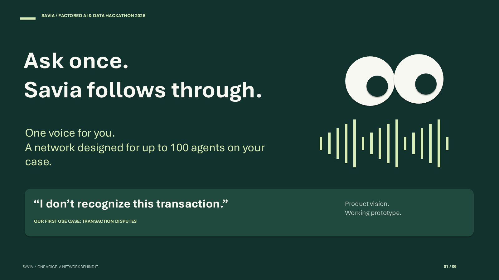
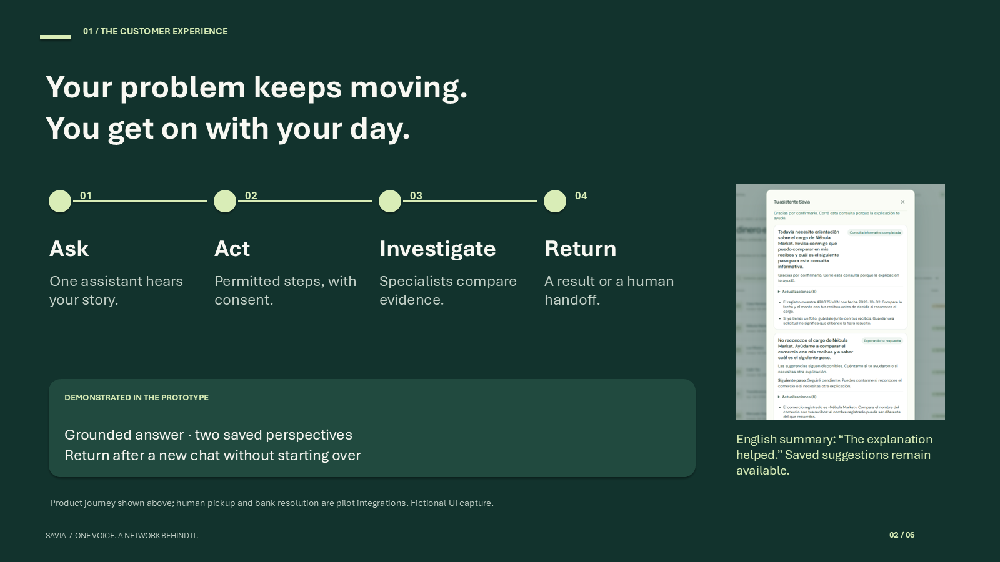
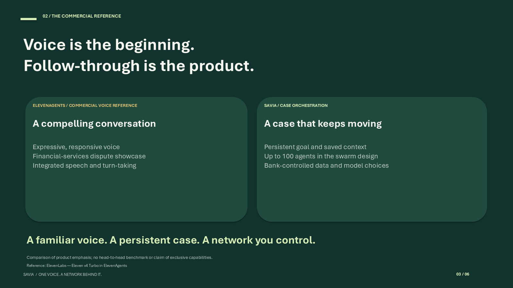
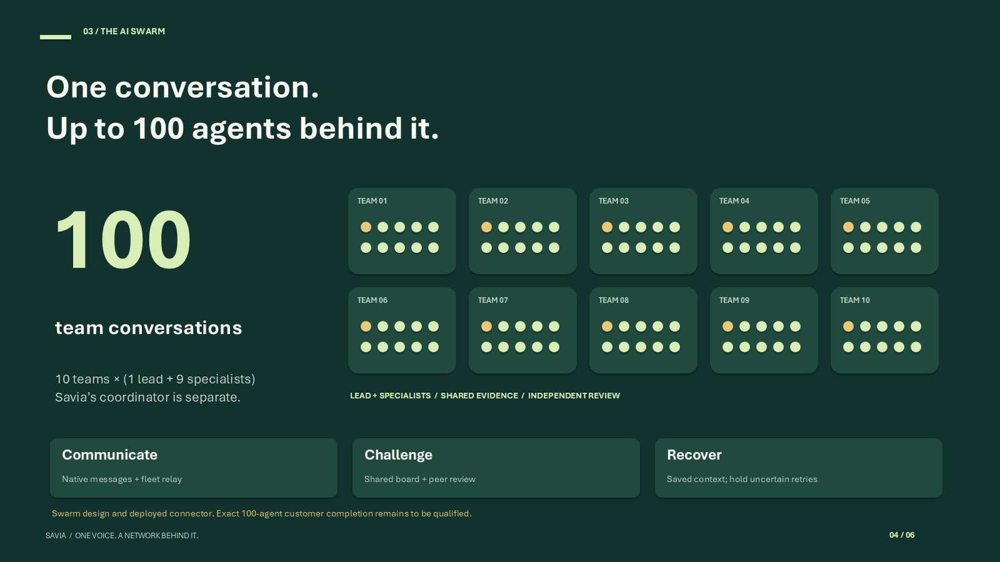
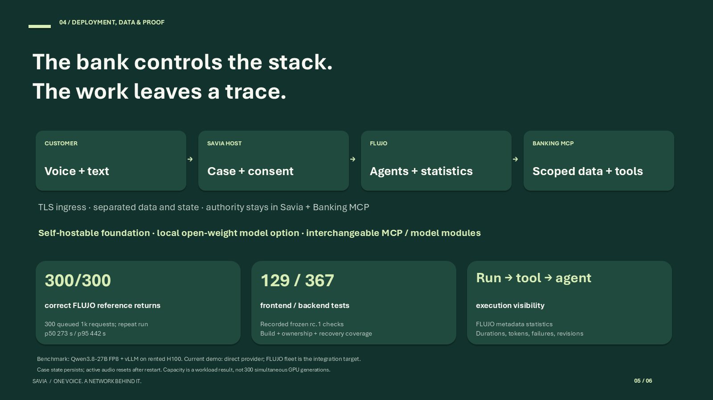
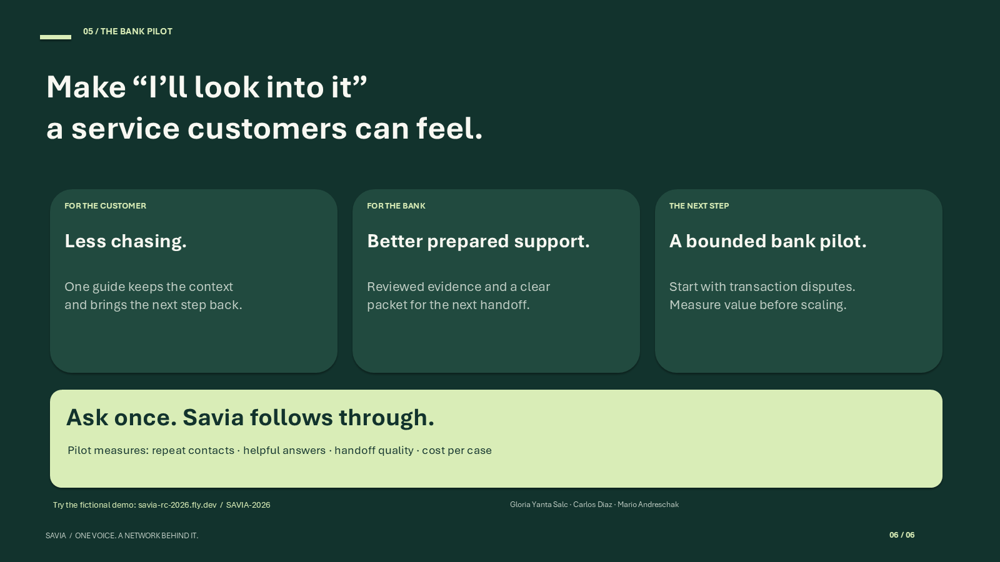

Six slides · English pitch · arrow keys move between slides · evidence and narration beneath each slide.

I don't recognize this transaction. For a customer, that is the start of a problem, not just a chat. Meet Savia: one voice assistant that keeps your case moving while you get on with your day. Behind that familiar voice is a network designed for up to one hundred agents.
Product vision: up to 100 team conversations. Working prototype: integrated voice, grounded explanation, durable inquiries and two completed reviewers. Transaction disputes are the first use case. Do not describe all 100 as proven simultaneous customer execution.
customer connector
Savia checks the selected transaction, explains what is known and takes permitted steps with your consent. If the answer needs investigation, the case keeps its context while specialists explore different approaches. Savia returns with a useful result or prepares the next human handoff. Our prototype already shows a grounded answer, two saved perspectives and a customer returning without starting over.
Actual fictional Spanish UI is shown with an English summary. Demonstrated: selected grounded answer 9.338 s; separate browser team interaction 4.278 s; two suggestions survive new chat/reload; customer marks an informational inquiry helpful. Integrated voice closure has complete playback receipts. A separate simulated receipt check repeats after 30 real minutes. Real human assignment, bank resolution/refund, push/email delivery and multi-day completion remain unverified. The story rail describes the intended full lifecycle, not a recorded four-stage production run.
customer release
ElevenLabs shows how compelling a natural transaction-dispute conversation can be. That is a commercial reference for voice quality. Savia makes the case itself the product: a persistent goal, multiple perspectives, reviewed findings and a deployment the bank can control. We are selling the service that keeps working after the conversation.
Comparison reframes the supplied analysis as product positioning, not a winner table. ElevenLabs official September 28 article, updated October 5, reports expressive voice, about 100 ms median inference, 90+ languages, a financial-services dispute demo and a combined transcription/turn-taking/TTS stack. No head-to-head performance, stronger compliance or missing competitor features are asserted. Savia focus and proposed deployment options differ in scope from a commercial platform showcase.
eleven connector
One assistant stays with the customer. The swarm design spreads the investigation across ten teams: one lead and nine specialists per team, one hundred agent conversations in total. They exchange messages, share evidence, challenge findings and return a reviewed synthesis. FLUJO provides the orchestration foundation; Savia owns the case. Existing sandbox collaboration and capacity tests support this design. The exact hundred-agent customer run still needs qualification.
Counting contract: 10 team Machines × (1 lead + 9 child specialists) = 100 team conversations; Savia root is separate. Configured child concurrency is nine; stock recovered flow used ten. Native subflow messaging/waiting; fleet delegation/message/wait; shared board and independent claim review. Real infrastructure evidence includes 18 simultaneous Fly leaf sandboxes, 17 completed leaf team runs, six matching output hashes; six of 24 leaf slots failed provisioning and operator steering was required. Larger recovered run enrolled 96 child Workers over time, not all simultaneously. Integrated customer attempt failed on first background root model call with disabled provider workspace before delegation. No 100-completion claim.
capacity connector
The system is modular: customer voice, durable case state, FLUJO orchestration and scoped banking tools. Data ownership and consent stay in the host and Banking MCP. Choose local open-weight inference or a hosted provider. FLUJO exposes run, model, tool and subflow statistics. The foundation returned three hundred correct reference codes from three hundred queued requests. The frozen release also records one hundred twenty-nine frontend and three hundred sixty-seven backend tests.
Deployment design supports self-hosted services and model selection; FLUJO local Ollama path is source-documented, not a measured all-local Savia deployment. Capacity benchmark used Qwen3.8-27B FP8 with vLLM 0.30.0 on rented Modal H100: repeat neutral reference-code workload, 1k context, 300 client submissions, p50 273.40 s, p95 441.60 s including queueing. First wording returned 217/300 correct; direct inference returned 399/400 correct; both retained. Counts 129 frontend / 367 backend refer to frozen rc.1 checks, not a fresh whole-release CI claim (current CI has failures). Statistics are metadata-only and best-effort; not every payload is retained and not an audit completeness guarantee. Current public app calls OpenRouter directly; target connects the FLUJO worker fleet. Cases/chat persist on disk; active audio state does not survive restart. Interrupted/unknown work is held rather than blindly replayed. TLS ingress, signed consent-scoped boundaries and separated data/state are source-backed controls, not a compliance certification.
capacity capacity_receipt release
For customers, the ambition is less chasing and less repeating. For the bank, it is clearer evidence and a better prepared handoff. Start with transaction disputes, then reuse the same modular service for other customer problems. We are seeking a bank partner for a bounded pilot: measure repeat contacts, helpful answers, handoff quality and cost per case. Ask once. Savia follows through.
Pilot invitation, not measured ROI. Live fictional demo link is a review entry point, not a freshly verified end-to-end customer acceptance. Entry code SAVIA-2026. Production bank actions and live human assignment are not claimed. Founder/team credits preserve Gloria Yanta Salc (prompt flow / decision design), Carlos Diaz (data pipeline / lookup), Mario Andreschak (integration / orchestration).
customer release